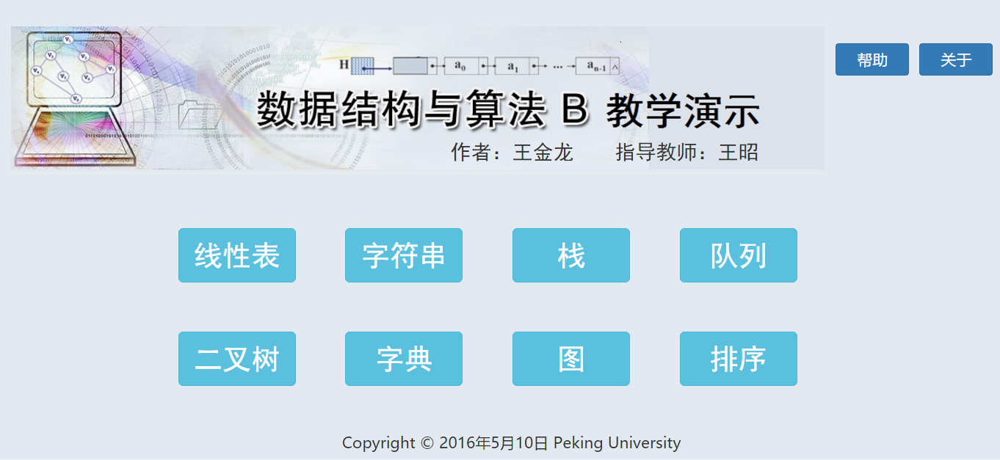
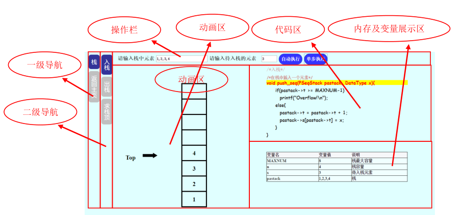
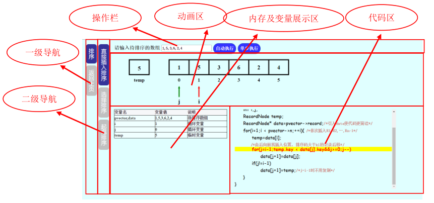

本软件采用逐级导航的形式来增强软件的引导性，使其具有更强的可用性和友好性。主要的界面有两种：
（1） 主页导航界面
（2） 功能演示界面
主页导航界面是用户进入浏览器链接后看到的界面，是最初级的导航界面，主要用来帮助用户选择要进行学习的数据结构与算法。
设计的主页导航界面如下：
其中的八个按钮分别对应着八种数据结构与算法，右上角的“帮助”和“关于”按钮介绍本系统的使用说明和基本信息。
考虑到不同数据结构与算法在页面上的扩展方向不同，所以本系统的功能演示界面采用了以下两种页面的设计样式：
 在主页面选择进入某一种数据结构与算法之后，就进入了功能演示界面，根据页面中的引导进行操作即可。